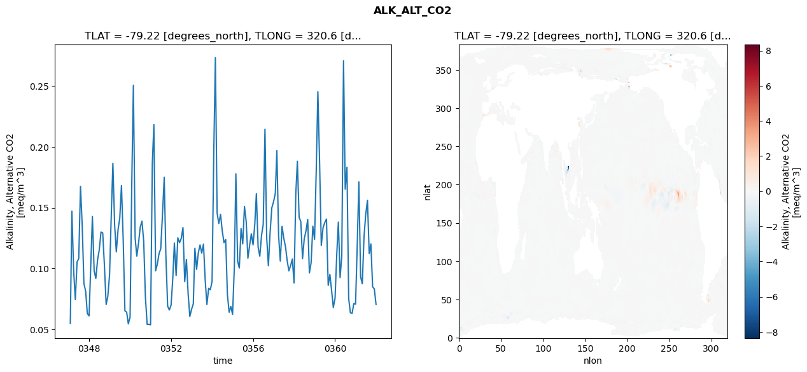
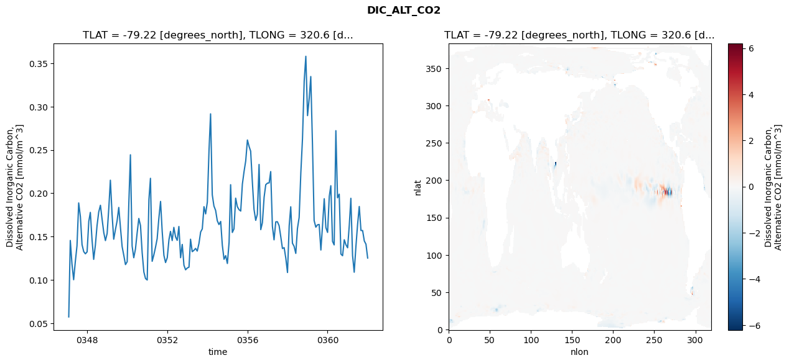
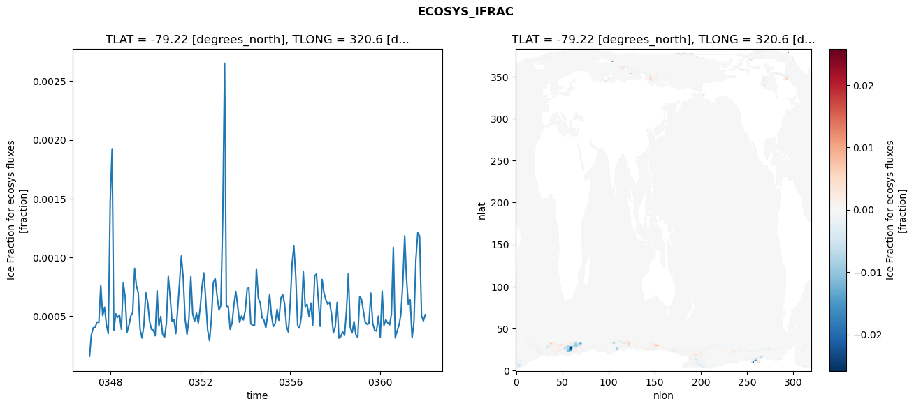
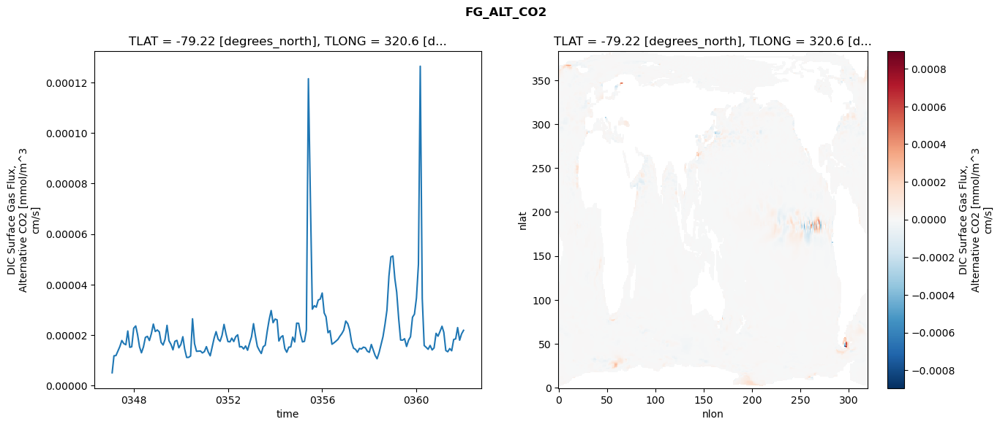

glb-dor_North_Atlantic_basin_005_1999-01-01_00020#
Simulation details#
Case: smyle.cdr-atlas-v0.glb-dor_North_Atlantic_basin_005_1999-01-01_00020.001
Basin: North_Atlantic_basin
Polygon: 5.0
Start date: 1999-01
Show code cell source Hide code cell source
import xarray as xr
import matplotlib.pyplot as plt
Show code cell source Hide code cell source
zarr_store = "/path/to/zarr/store"
# Parameters
zarr_store = "/global/cfs/projectdirs/m4746/Projects/Ocean-CDR-Atlas-v0/data/validation/smyle.cdr-atlas-v0.glb-dor_North_Atlantic_basin_005_1999-01-01_00020.001.validation.zarr"
Show code cell source Hide code cell source
%%time
ds_o = xr.open_zarr(zarr_store).compute()
ds_o
CPU times: user 593 ms, sys: 513 ms, total: 1.11 s
Wall time: 1.41 s
<xarray.Dataset> Size: 2MB
Dimensions: (nlat: 384, nlon: 320, time: 180)
Coordinates:
TLAT float64 8B -79.22
TLONG float64 8B 320.6
ULAT float64 8B -78.95
ULONG float64 8B 321.1
* time (time) object 1kB 0347-02-01 00:00:00 ... 0362-01-01 0...
z_t float32 4B 500.0
Dimensions without coordinates: nlat, nlon
Data variables:
ALK_ALT_CO2_diff (nlat, nlon) float32 492kB nan nan nan ... nan nan nan
ALK_ALT_CO2_rmse (time) float64 1kB 0.05505 0.1472 ... 0.08342 0.07061
DIC_ALT_CO2_diff (nlat, nlon) float32 492kB nan nan nan ... nan nan nan
DIC_ALT_CO2_rmse (time) float64 1kB 0.05728 0.1455 ... 0.1413 0.1252
ECOSYS_IFRAC_diff (nlat, nlon) float32 492kB nan nan nan ... nan nan nan
ECOSYS_IFRAC_rmse (time) float64 1kB 0.0001589 0.0003389 ... 0.0005127
FG_ALT_CO2_diff (nlat, nlon) float32 492kB nan nan nan ... nan nan nan
FG_ALT_CO2_rmse (time) float64 1kB 5.021e-06 1.175e-05 ... 2.184e-05xarray.Dataset
- nlat: 384
- nlon: 320
- time: 180
- TLAT()float64-79.22
- long_name :
- array of t-grid latitudes
- units :
- degrees_north
array(-79.22052261)
- TLONG()float64320.6
- long_name :
- array of t-grid longitudes
- units :
- degrees_east
array(320.56250892)
- ULAT()float64-78.95
- long_name :
- array of u-grid latitudes
- units :
- degrees_north
array(-78.95289509)
- ULONG()float64321.1
- long_name :
- array of u-grid longitudes
- units :
- degrees_east
array(321.12500894)
- time(time)object0347-02-01 00:00:00 ... 0362-01-...
- bounds :
- time_bound
- long_name :
- time
array([cftime.DatetimeNoLeap(347, 2, 1, 0, 0, 0, 0, has_year_zero=True), cftime.DatetimeNoLeap(347, 3, 1, 0, 0, 0, 0, has_year_zero=True), cftime.DatetimeNoLeap(347, 4, 1, 0, 0, 0, 0, has_year_zero=True), cftime.DatetimeNoLeap(347, 5, 1, 0, 0, 0, 0, has_year_zero=True), cftime.DatetimeNoLeap(347, 6, 1, 0, 0, 0, 0, has_year_zero=True), cftime.DatetimeNoLeap(347, 7, 1, 0, 0, 0, 0, has_year_zero=True), cftime.DatetimeNoLeap(347, 8, 1, 0, 0, 0, 0, has_year_zero=True), cftime.DatetimeNoLeap(347, 9, 1, 0, 0, 0, 0, has_year_zero=True), cftime.DatetimeNoLeap(347, 10, 1, 0, 0, 0, 0, has_year_zero=True), cftime.DatetimeNoLeap(347, 11, 1, 0, 0, 0, 0, has_year_zero=True), cftime.DatetimeNoLeap(347, 12, 1, 0, 0, 0, 0, has_year_zero=True), cftime.DatetimeNoLeap(348, 1, 1, 0, 0, 0, 0, has_year_zero=True), cftime.DatetimeNoLeap(348, 2, 1, 0, 0, 0, 0, has_year_zero=True), cftime.DatetimeNoLeap(348, 3, 1, 0, 0, 0, 0, has_year_zero=True), cftime.DatetimeNoLeap(348, 4, 1, 0, 0, 0, 0, has_year_zero=True), cftime.DatetimeNoLeap(348, 5, 1, 0, 0, 0, 0, has_year_zero=True), cftime.DatetimeNoLeap(348, 6, 1, 0, 0, 0, 0, has_year_zero=True), cftime.DatetimeNoLeap(348, 7, 1, 0, 0, 0, 0, has_year_zero=True), cftime.DatetimeNoLeap(348, 8, 1, 0, 0, 0, 0, has_year_zero=True), cftime.DatetimeNoLeap(348, 9, 1, 0, 0, 0, 0, has_year_zero=True), cftime.DatetimeNoLeap(348, 10, 1, 0, 0, 0, 0, has_year_zero=True), cftime.DatetimeNoLeap(348, 11, 1, 0, 0, 0, 0, has_year_zero=True), cftime.DatetimeNoLeap(348, 12, 1, 0, 0, 0, 0, has_year_zero=True), cftime.DatetimeNoLeap(349, 1, 1, 0, 0, 0, 0, has_year_zero=True), cftime.DatetimeNoLeap(349, 2, 1, 0, 0, 0, 0, has_year_zero=True), cftime.DatetimeNoLeap(349, 3, 1, 0, 0, 0, 0, has_year_zero=True), cftime.DatetimeNoLeap(349, 4, 1, 0, 0, 0, 0, has_year_zero=True), cftime.DatetimeNoLeap(349, 5, 1, 0, 0, 0, 0, has_year_zero=True), cftime.DatetimeNoLeap(349, 6, 1, 0, 0, 0, 0, has_year_zero=True), cftime.DatetimeNoLeap(349, 7, 1, 0, 0, 0, 0, has_year_zero=True), cftime.DatetimeNoLeap(349, 8, 1, 0, 0, 0, 0, has_year_zero=True), cftime.DatetimeNoLeap(349, 9, 1, 0, 0, 0, 0, has_year_zero=True), cftime.DatetimeNoLeap(349, 10, 1, 0, 0, 0, 0, has_year_zero=True), cftime.DatetimeNoLeap(349, 11, 1, 0, 0, 0, 0, has_year_zero=True), cftime.DatetimeNoLeap(349, 12, 1, 0, 0, 0, 0, has_year_zero=True), cftime.DatetimeNoLeap(350, 1, 1, 0, 0, 0, 0, has_year_zero=True), cftime.DatetimeNoLeap(350, 2, 1, 0, 0, 0, 0, has_year_zero=True), cftime.DatetimeNoLeap(350, 3, 1, 0, 0, 0, 0, has_year_zero=True), cftime.DatetimeNoLeap(350, 4, 1, 0, 0, 0, 0, has_year_zero=True), cftime.DatetimeNoLeap(350, 5, 1, 0, 0, 0, 0, has_year_zero=True), cftime.DatetimeNoLeap(350, 6, 1, 0, 0, 0, 0, has_year_zero=True), cftime.DatetimeNoLeap(350, 7, 1, 0, 0, 0, 0, has_year_zero=True), cftime.DatetimeNoLeap(350, 8, 1, 0, 0, 0, 0, has_year_zero=True), cftime.DatetimeNoLeap(350, 9, 1, 0, 0, 0, 0, has_year_zero=True), cftime.DatetimeNoLeap(350, 10, 1, 0, 0, 0, 0, has_year_zero=True), cftime.DatetimeNoLeap(350, 11, 1, 0, 0, 0, 0, has_year_zero=True), cftime.DatetimeNoLeap(350, 12, 1, 0, 0, 0, 0, has_year_zero=True), cftime.DatetimeNoLeap(351, 1, 1, 0, 0, 0, 0, has_year_zero=True), cftime.DatetimeNoLeap(351, 2, 1, 0, 0, 0, 0, has_year_zero=True), cftime.DatetimeNoLeap(351, 3, 1, 0, 0, 0, 0, has_year_zero=True), cftime.DatetimeNoLeap(351, 4, 1, 0, 0, 0, 0, has_year_zero=True), cftime.DatetimeNoLeap(351, 5, 1, 0, 0, 0, 0, has_year_zero=True), cftime.DatetimeNoLeap(351, 6, 1, 0, 0, 0, 0, has_year_zero=True), cftime.DatetimeNoLeap(351, 7, 1, 0, 0, 0, 0, has_year_zero=True), cftime.DatetimeNoLeap(351, 8, 1, 0, 0, 0, 0, has_year_zero=True), cftime.DatetimeNoLeap(351, 9, 1, 0, 0, 0, 0, has_year_zero=True), cftime.DatetimeNoLeap(351, 10, 1, 0, 0, 0, 0, has_year_zero=True), cftime.DatetimeNoLeap(351, 11, 1, 0, 0, 0, 0, has_year_zero=True), cftime.DatetimeNoLeap(351, 12, 1, 0, 0, 0, 0, has_year_zero=True), cftime.DatetimeNoLeap(352, 1, 1, 0, 0, 0, 0, has_year_zero=True), cftime.DatetimeNoLeap(352, 2, 1, 0, 0, 0, 0, has_year_zero=True), cftime.DatetimeNoLeap(352, 3, 1, 0, 0, 0, 0, has_year_zero=True), cftime.DatetimeNoLeap(352, 4, 1, 0, 0, 0, 0, has_year_zero=True), cftime.DatetimeNoLeap(352, 5, 1, 0, 0, 0, 0, has_year_zero=True), cftime.DatetimeNoLeap(352, 6, 1, 0, 0, 0, 0, has_year_zero=True), cftime.DatetimeNoLeap(352, 7, 1, 0, 0, 0, 0, has_year_zero=True), cftime.DatetimeNoLeap(352, 8, 1, 0, 0, 0, 0, has_year_zero=True), cftime.DatetimeNoLeap(352, 9, 1, 0, 0, 0, 0, has_year_zero=True), cftime.DatetimeNoLeap(352, 10, 1, 0, 0, 0, 0, has_year_zero=True), cftime.DatetimeNoLeap(352, 11, 1, 0, 0, 0, 0, has_year_zero=True), cftime.DatetimeNoLeap(352, 12, 1, 0, 0, 0, 0, has_year_zero=True), cftime.DatetimeNoLeap(353, 1, 1, 0, 0, 0, 0, has_year_zero=True), cftime.DatetimeNoLeap(353, 2, 1, 0, 0, 0, 0, has_year_zero=True), cftime.DatetimeNoLeap(353, 3, 1, 0, 0, 0, 0, has_year_zero=True), cftime.DatetimeNoLeap(353, 4, 1, 0, 0, 0, 0, has_year_zero=True), cftime.DatetimeNoLeap(353, 5, 1, 0, 0, 0, 0, has_year_zero=True), cftime.DatetimeNoLeap(353, 6, 1, 0, 0, 0, 0, has_year_zero=True), cftime.DatetimeNoLeap(353, 7, 1, 0, 0, 0, 0, has_year_zero=True), cftime.DatetimeNoLeap(353, 8, 1, 0, 0, 0, 0, has_year_zero=True), cftime.DatetimeNoLeap(353, 9, 1, 0, 0, 0, 0, has_year_zero=True), cftime.DatetimeNoLeap(353, 10, 1, 0, 0, 0, 0, has_year_zero=True), cftime.DatetimeNoLeap(353, 11, 1, 0, 0, 0, 0, has_year_zero=True), cftime.DatetimeNoLeap(353, 12, 1, 0, 0, 0, 0, has_year_zero=True), cftime.DatetimeNoLeap(354, 1, 1, 0, 0, 0, 0, has_year_zero=True), cftime.DatetimeNoLeap(354, 2, 1, 0, 0, 0, 0, has_year_zero=True), cftime.DatetimeNoLeap(354, 3, 1, 0, 0, 0, 0, has_year_zero=True), cftime.DatetimeNoLeap(354, 4, 1, 0, 0, 0, 0, has_year_zero=True), cftime.DatetimeNoLeap(354, 5, 1, 0, 0, 0, 0, has_year_zero=True), cftime.DatetimeNoLeap(354, 6, 1, 0, 0, 0, 0, has_year_zero=True), cftime.DatetimeNoLeap(354, 7, 1, 0, 0, 0, 0, has_year_zero=True), cftime.DatetimeNoLeap(354, 8, 1, 0, 0, 0, 0, has_year_zero=True), cftime.DatetimeNoLeap(354, 9, 1, 0, 0, 0, 0, has_year_zero=True), cftime.DatetimeNoLeap(354, 10, 1, 0, 0, 0, 0, has_year_zero=True), cftime.DatetimeNoLeap(354, 11, 1, 0, 0, 0, 0, has_year_zero=True), cftime.DatetimeNoLeap(354, 12, 1, 0, 0, 0, 0, has_year_zero=True), cftime.DatetimeNoLeap(355, 1, 1, 0, 0, 0, 0, has_year_zero=True), cftime.DatetimeNoLeap(355, 2, 1, 0, 0, 0, 0, has_year_zero=True), cftime.DatetimeNoLeap(355, 3, 1, 0, 0, 0, 0, has_year_zero=True), cftime.DatetimeNoLeap(355, 4, 1, 0, 0, 0, 0, has_year_zero=True), cftime.DatetimeNoLeap(355, 5, 1, 0, 0, 0, 0, has_year_zero=True), cftime.DatetimeNoLeap(355, 6, 1, 0, 0, 0, 0, has_year_zero=True), cftime.DatetimeNoLeap(355, 7, 1, 0, 0, 0, 0, has_year_zero=True), cftime.DatetimeNoLeap(355, 8, 1, 0, 0, 0, 0, has_year_zero=True), cftime.DatetimeNoLeap(355, 9, 1, 0, 0, 0, 0, has_year_zero=True), cftime.DatetimeNoLeap(355, 10, 1, 0, 0, 0, 0, has_year_zero=True), cftime.DatetimeNoLeap(355, 11, 1, 0, 0, 0, 0, has_year_zero=True), cftime.DatetimeNoLeap(355, 12, 1, 0, 0, 0, 0, has_year_zero=True), cftime.DatetimeNoLeap(356, 1, 1, 0, 0, 0, 0, has_year_zero=True), cftime.DatetimeNoLeap(356, 2, 1, 0, 0, 0, 0, has_year_zero=True), cftime.DatetimeNoLeap(356, 3, 1, 0, 0, 0, 0, has_year_zero=True), cftime.DatetimeNoLeap(356, 4, 1, 0, 0, 0, 0, has_year_zero=True), cftime.DatetimeNoLeap(356, 5, 1, 0, 0, 0, 0, has_year_zero=True), cftime.DatetimeNoLeap(356, 6, 1, 0, 0, 0, 0, has_year_zero=True), cftime.DatetimeNoLeap(356, 7, 1, 0, 0, 0, 0, has_year_zero=True), cftime.DatetimeNoLeap(356, 8, 1, 0, 0, 0, 0, has_year_zero=True), cftime.DatetimeNoLeap(356, 9, 1, 0, 0, 0, 0, has_year_zero=True), cftime.DatetimeNoLeap(356, 10, 1, 0, 0, 0, 0, has_year_zero=True), cftime.DatetimeNoLeap(356, 11, 1, 0, 0, 0, 0, has_year_zero=True), cftime.DatetimeNoLeap(356, 12, 1, 0, 0, 0, 0, has_year_zero=True), cftime.DatetimeNoLeap(357, 1, 1, 0, 0, 0, 0, has_year_zero=True), cftime.DatetimeNoLeap(357, 2, 1, 0, 0, 0, 0, has_year_zero=True), cftime.DatetimeNoLeap(357, 3, 1, 0, 0, 0, 0, has_year_zero=True), cftime.DatetimeNoLeap(357, 4, 1, 0, 0, 0, 0, has_year_zero=True), cftime.DatetimeNoLeap(357, 5, 1, 0, 0, 0, 0, has_year_zero=True), cftime.DatetimeNoLeap(357, 6, 1, 0, 0, 0, 0, has_year_zero=True), cftime.DatetimeNoLeap(357, 7, 1, 0, 0, 0, 0, has_year_zero=True), cftime.DatetimeNoLeap(357, 8, 1, 0, 0, 0, 0, has_year_zero=True), cftime.DatetimeNoLeap(357, 9, 1, 0, 0, 0, 0, has_year_zero=True), cftime.DatetimeNoLeap(357, 10, 1, 0, 0, 0, 0, has_year_zero=True), cftime.DatetimeNoLeap(357, 11, 1, 0, 0, 0, 0, has_year_zero=True), cftime.DatetimeNoLeap(357, 12, 1, 0, 0, 0, 0, has_year_zero=True), cftime.DatetimeNoLeap(358, 1, 1, 0, 0, 0, 0, has_year_zero=True), cftime.DatetimeNoLeap(358, 2, 1, 0, 0, 0, 0, has_year_zero=True), cftime.DatetimeNoLeap(358, 3, 1, 0, 0, 0, 0, has_year_zero=True), cftime.DatetimeNoLeap(358, 4, 1, 0, 0, 0, 0, has_year_zero=True), cftime.DatetimeNoLeap(358, 5, 1, 0, 0, 0, 0, has_year_zero=True), cftime.DatetimeNoLeap(358, 6, 1, 0, 0, 0, 0, has_year_zero=True), cftime.DatetimeNoLeap(358, 7, 1, 0, 0, 0, 0, has_year_zero=True), cftime.DatetimeNoLeap(358, 8, 1, 0, 0, 0, 0, has_year_zero=True), cftime.DatetimeNoLeap(358, 9, 1, 0, 0, 0, 0, has_year_zero=True), cftime.DatetimeNoLeap(358, 10, 1, 0, 0, 0, 0, has_year_zero=True), cftime.DatetimeNoLeap(358, 11, 1, 0, 0, 0, 0, has_year_zero=True), cftime.DatetimeNoLeap(358, 12, 1, 0, 0, 0, 0, has_year_zero=True), cftime.DatetimeNoLeap(359, 1, 1, 0, 0, 0, 0, has_year_zero=True), cftime.DatetimeNoLeap(359, 2, 1, 0, 0, 0, 0, has_year_zero=True), cftime.DatetimeNoLeap(359, 3, 1, 0, 0, 0, 0, has_year_zero=True), cftime.DatetimeNoLeap(359, 4, 1, 0, 0, 0, 0, has_year_zero=True), cftime.DatetimeNoLeap(359, 5, 1, 0, 0, 0, 0, has_year_zero=True), cftime.DatetimeNoLeap(359, 6, 1, 0, 0, 0, 0, has_year_zero=True), cftime.DatetimeNoLeap(359, 7, 1, 0, 0, 0, 0, has_year_zero=True), cftime.DatetimeNoLeap(359, 8, 1, 0, 0, 0, 0, has_year_zero=True), cftime.DatetimeNoLeap(359, 9, 1, 0, 0, 0, 0, has_year_zero=True), cftime.DatetimeNoLeap(359, 10, 1, 0, 0, 0, 0, has_year_zero=True), cftime.DatetimeNoLeap(359, 11, 1, 0, 0, 0, 0, has_year_zero=True), cftime.DatetimeNoLeap(359, 12, 1, 0, 0, 0, 0, has_year_zero=True), cftime.DatetimeNoLeap(360, 1, 1, 0, 0, 0, 0, has_year_zero=True), cftime.DatetimeNoLeap(360, 2, 1, 0, 0, 0, 0, has_year_zero=True), cftime.DatetimeNoLeap(360, 3, 1, 0, 0, 0, 0, has_year_zero=True), cftime.DatetimeNoLeap(360, 4, 1, 0, 0, 0, 0, has_year_zero=True), cftime.DatetimeNoLeap(360, 5, 1, 0, 0, 0, 0, has_year_zero=True), cftime.DatetimeNoLeap(360, 6, 1, 0, 0, 0, 0, has_year_zero=True), cftime.DatetimeNoLeap(360, 7, 1, 0, 0, 0, 0, has_year_zero=True), cftime.DatetimeNoLeap(360, 8, 1, 0, 0, 0, 0, has_year_zero=True), cftime.DatetimeNoLeap(360, 9, 1, 0, 0, 0, 0, has_year_zero=True), cftime.DatetimeNoLeap(360, 10, 1, 0, 0, 0, 0, has_year_zero=True), cftime.DatetimeNoLeap(360, 11, 1, 0, 0, 0, 0, has_year_zero=True), cftime.DatetimeNoLeap(360, 12, 1, 0, 0, 0, 0, has_year_zero=True), cftime.DatetimeNoLeap(361, 1, 1, 0, 0, 0, 0, has_year_zero=True), cftime.DatetimeNoLeap(361, 2, 1, 0, 0, 0, 0, has_year_zero=True), cftime.DatetimeNoLeap(361, 3, 1, 0, 0, 0, 0, has_year_zero=True), cftime.DatetimeNoLeap(361, 4, 1, 0, 0, 0, 0, has_year_zero=True), cftime.DatetimeNoLeap(361, 5, 1, 0, 0, 0, 0, has_year_zero=True), cftime.DatetimeNoLeap(361, 6, 1, 0, 0, 0, 0, has_year_zero=True), cftime.DatetimeNoLeap(361, 7, 1, 0, 0, 0, 0, has_year_zero=True), cftime.DatetimeNoLeap(361, 8, 1, 0, 0, 0, 0, has_year_zero=True), cftime.DatetimeNoLeap(361, 9, 1, 0, 0, 0, 0, has_year_zero=True), cftime.DatetimeNoLeap(361, 10, 1, 0, 0, 0, 0, has_year_zero=True), cftime.DatetimeNoLeap(361, 11, 1, 0, 0, 0, 0, has_year_zero=True), cftime.DatetimeNoLeap(361, 12, 1, 0, 0, 0, 0, has_year_zero=True), cftime.DatetimeNoLeap(362, 1, 1, 0, 0, 0, 0, has_year_zero=True)], dtype=object) - z_t()float32500.0
- long_name :
- depth from surface to midpoint of layer
- positive :
- down
- units :
- centimeters
- valid_max :
- 537500.0
- valid_min :
- 500.0
array(500., dtype=float32)
- ALK_ALT_CO2_diff(nlat, nlon)float32nan nan nan nan ... nan nan nan nan
- cell_methods :
- time: mean
- grid_loc :
- 3111
- long_name :
- Alkalinity, Alternative CO2
- units :
- meq/m^3
array([[ nan, nan, nan, ..., nan, nan, nan], [ nan, nan, nan, ..., nan, nan, nan], [0.06079102, 0.02929688, 0.02563477, ..., nan, nan, nan], ..., [ nan, nan, nan, ..., nan, nan, nan], [ nan, nan, nan, ..., nan, nan, nan], [ nan, nan, nan, ..., nan, nan, nan]], dtype=float32) - ALK_ALT_CO2_rmse(time)float640.05505 0.1472 ... 0.08342 0.07061
- cell_methods :
- time: mean
- grid_loc :
- 3111
- long_name :
- Alkalinity, Alternative CO2
- units :
- meq/m^3
array([0.05504838, 0.14718179, 0.09862698, 0.07466649, 0.1055198 , 0.1082632 , 0.16750723, 0.13514846, 0.08779761, 0.0814271 , 0.06310082, 0.06125687, 0.10466997, 0.14281988, 0.09834529, 0.09189996, 0.1071384 , 0.11537271, 0.1300293 , 0.12931125, 0.10273842, 0.07051978, 0.07743912, 0.09509829, 0.14549394, 0.1865013 , 0.13579237, 0.11375931, 0.13210825, 0.1412261 , 0.16822635, 0.12290693, 0.06538036, 0.06429828, 0.05464444, 0.06024096, 0.17228015, 0.25049221, 0.12512463, 0.11026094, 0.12110378, 0.13407076, 0.13903922, 0.12233186, 0.07668866, 0.05429483, 0.05430426, 0.05393733, 0.18633832, 0.21824126, 0.0982681 , 0.10356257, 0.11241037, 0.11631794, 0.14437532, 0.17508431, 0.11009233, 0.06925016, 0.06606113, 0.07000291, 0.09237381, 0.1210067 , 0.09430663, 0.12529846, 0.12134231, 0.12477008, 0.13368241, 0.08931574, 0.10763168, 0.07916326, 0.06074473, 0.06661407, 0.07124237, 0.11668279, 0.09945808, 0.1129818 , 0.11946424, 0.112757 , 0.12015364, 0.09029419, 0.07054768, 0.08381387, 0.08273391, 0.08958748, 0.1966924 , 0.27315514, 0.14566108, 0.13701938, 0.14459188, 0.13117928, 0.12136049, 0.12388522, 0.078766 , 0.06422719, 0.06898861, 0.06250487, 0.10045906, 0.17788672, 0.10617035, 0.10046047, 0.13291673, 0.12030925, 0.15102799, 0.13847552, 0.10856271, 0.11921307, 0.128534 , 0.11952362, 0.13667222, 0.16163882, 0.11772391, 0.11021086, 0.12734724, 0.13636603, 0.2144216 , 0.12524932, 0.1024165 , 0.13034193, 0.14998543, 0.15491493, 0.16176509, 0.19686329, 0.12697677, 0.1061747 , 0.13480368, 0.12516153, 0.11818928, 0.10634227, 0.0982022 , 0.10262232, 0.10788383, 0.08828274, 0.1615734 , 0.18814282, 0.14207506, 0.13869029, 0.10826049, 0.1244247 , 0.13086495, 0.14039398, 0.09643038, 0.10495666, 0.13491052, 0.12401343, 0.18294118, 0.24532886, 0.18665052, 0.11902133, 0.13360614, 0.13770809, 0.14072991, 0.08628068, 0.09524416, 0.08191533, 0.06813888, 0.0756917 , 0.11238417, 0.13822323, 0.09264596, 0.11059768, 0.27069846, 0.16519608, 0.18320822, 0.07528086, 0.0637831 , 0.06326423, 0.07135401, 0.07088832, 0.12071577, 0.17121567, 0.09323457, 0.08757799, 0.12636017, 0.14443561, 0.15611157, 0.11243139, 0.1203439 , 0.08513277, 0.08341975, 0.07060647]) - DIC_ALT_CO2_diff(nlat, nlon)float32nan nan nan nan ... nan nan nan nan
- cell_methods :
- time: mean
- grid_loc :
- 3111
- long_name :
- Dissolved Inorganic Carbon, Alternative CO2
- units :
- mmol/m^3
array([[ nan, nan, nan, ..., nan, nan, nan], [ nan, nan, nan, ..., nan, nan, nan], [0.06225586, 0.02685547, 0.02807617, ..., nan, nan, nan], ..., [ nan, nan, nan, ..., nan, nan, nan], [ nan, nan, nan, ..., nan, nan, nan], [ nan, nan, nan, ..., nan, nan, nan]], dtype=float32) - DIC_ALT_CO2_rmse(time)float640.05728 0.1455 ... 0.1413 0.1252
- cell_methods :
- time: mean
- grid_loc :
- 3111
- long_name :
- Dissolved Inorganic Carbon, Alternative CO2
- units :
- mmol/m^3
array([0.05727663, 0.14551402, 0.11820961, 0.10020491, 0.12136323, 0.13933272, 0.18881809, 0.172885 , 0.14065295, 0.13257571, 0.13011516, 0.13234598, 0.16761332, 0.17789391, 0.14618332, 0.12370699, 0.14019311, 0.16256304, 0.17842349, 0.18614608, 0.17015622, 0.1545286 , 0.14536815, 0.15360512, 0.18336089, 0.21505806, 0.17552927, 0.14696294, 0.15798909, 0.16794341, 0.18361634, 0.16016394, 0.13842705, 0.12817782, 0.11766911, 0.12096385, 0.19028195, 0.24439498, 0.13913948, 0.12559029, 0.13561387, 0.1539356 , 0.17094008, 0.16260537, 0.13138057, 0.10907256, 0.10160389, 0.09988285, 0.19269164, 0.21724026, 0.12147967, 0.12858271, 0.13765288, 0.14753176, 0.17106977, 0.19057724, 0.15577494, 0.12830862, 0.12002474, 0.12560141, 0.14640316, 0.15600135, 0.14542681, 0.16060121, 0.14965466, 0.14566163, 0.16163835, 0.12561869, 0.14092751, 0.11691039, 0.11167302, 0.11373604, 0.11474682, 0.14695879, 0.13258012, 0.1340555 , 0.13634472, 0.13327678, 0.14188243, 0.1552535 , 0.15888171, 0.18449918, 0.17616386, 0.18973871, 0.25034701, 0.2916588 , 0.19820534, 0.18530537, 0.18019831, 0.16833407, 0.16384843, 0.16747354, 0.14006213, 0.12380201, 0.12800989, 0.11896106, 0.1432472 , 0.20986801, 0.15474022, 0.15887313, 0.19432465, 0.1845663 , 0.18108969, 0.17947025, 0.21049352, 0.22518019, 0.23731353, 0.2614469 , 0.25385285, 0.24858516, 0.21313407, 0.18147542, 0.16870549, 0.17581302, 0.23323935, 0.15804558, 0.16601648, 0.19545697, 0.20990665, 0.2116489 , 0.21201778, 0.22503518, 0.16188933, 0.14626495, 0.16700721, 0.16713976, 0.16261656, 0.14963525, 0.1361994 , 0.13720848, 0.12521311, 0.10853119, 0.16257411, 0.18439376, 0.14231816, 0.13880432, 0.13058989, 0.15925679, 0.17201266, 0.22384982, 0.26302669, 0.32945741, 0.35809263, 0.28963086, 0.30983329, 0.33473334, 0.25615018, 0.16848635, 0.16087564, 0.16355016, 0.16397555, 0.13448853, 0.16259976, 0.19369164, 0.16031239, 0.15479591, 0.19647933, 0.20870008, 0.14451326, 0.14037867, 0.27223997, 0.19477575, 0.19897617, 0.12982956, 0.12790909, 0.14633932, 0.14060398, 0.13706023, 0.16361008, 0.19418231, 0.12818394, 0.10885255, 0.13848641, 0.16354498, 0.18472033, 0.15699279, 0.1570002 , 0.14491036, 0.14127009, 0.12524948]) - ECOSYS_IFRAC_diff(nlat, nlon)float32nan nan nan nan ... nan nan nan nan
- cell_methods :
- time: mean
- grid_loc :
- 2110
- long_name :
- Ice Fraction for ecosys fluxes
- units :
- fraction
array([[ nan, nan, nan, ..., nan, nan, nan], [ nan, nan, nan, ..., nan, nan, nan], [-0.00056767, -0.00025713, -0.00020051, ..., nan, nan, nan], ..., [ nan, nan, nan, ..., nan, nan, nan], [ nan, nan, nan, ..., nan, nan, nan], [ nan, nan, nan, ..., nan, nan, nan]], dtype=float32) - ECOSYS_IFRAC_rmse(time)float640.0001589 0.0003389 ... 0.0005127
- cell_methods :
- time: mean
- grid_loc :
- 2110
- long_name :
- Ice Fraction for ecosys fluxes
- units :
- fraction
array([0.00015895, 0.00033889, 0.00040147, 0.00040186, 0.00045008, 0.00044594, 0.00076146, 0.0005044 , 0.00057583, 0.00042703, 0.00035117, 0.00147923, 0.00192438, 0.00038066, 0.00051989, 0.00048826, 0.00050999, 0.00038863, 0.00078453, 0.00066255, 0.00036241, 0.00042122, 0.00050267, 0.00053002, 0.00090755, 0.00076155, 0.00069802, 0.00038669, 0.00031289, 0.00041917, 0.00069969, 0.00061945, 0.00045958, 0.00038804, 0.000382 , 0.00033278, 0.00071583, 0.00041494, 0.00049752, 0.00034353, 0.00031783, 0.00043441, 0.00083783, 0.00065421, 0.00045499, 0.00046972, 0.00035091, 0.00056259, 0.00079917, 0.0010119 , 0.00081866, 0.00047431, 0.00034518, 0.00047761, 0.00083681, 0.00051949, 0.00045379, 0.00052474, 0.00044198, 0.00057578, 0.00075967, 0.00086759, 0.00063446, 0.00038383, 0.00029077, 0.00047474, 0.00078485, 0.00082131, 0.00067451, 0.00055209, 0.00059029, 0.00132514, 0.00265188, 0.00058203, 0.00058267, 0.00038762, 0.00043887, 0.00059579, 0.00071087, 0.00058433, 0.00044725, 0.00050034, 0.00046725, 0.00054633, 0.00073312, 0.00074174, 0.00043521, 0.00042242, 0.00042252, 0.00090251, 0.00065376, 0.00061286, 0.00048676, 0.00046562, 0.00040053, 0.00051678, 0.00068618, 0.00051174, 0.00041056, 0.00043741, 0.00055911, 0.00046437, 0.0006525 , 0.00068407, 0.00060665, 0.00041261, 0.00036414, 0.00061326, 0.00095437, 0.00109643, 0.00083333, 0.00041991, 0.00039806, 0.00050145, 0.00087769, 0.00057992, 0.00060028, 0.00049862, 0.00061124, 0.00042299, 0.00084185, 0.00085865, 0.00064121, 0.00041293, 0.00081248, 0.0007008 , 0.00063996, 0.00060122, 0.00061734, 0.00052038, 0.00035612, 0.00040951, 0.00061713, 0.00031265, 0.00032685, 0.00036884, 0.00033626, 0.0005421 , 0.0008593 , 0.00040305, 0.00035732, 0.000455 , 0.00033993, 0.00031887, 0.00066581, 0.00064787, 0.00054877, 0.00045168, 0.00043012, 0.00043591, 0.00069597, 0.0004362 , 0.00038102, 0.00037269, 0.00049918, 0.00032139, 0.00071356, 0.00041997, 0.00047019, 0.00044273, 0.00042524, 0.00051612, 0.00108585, 0.0003147 , 0.00037316, 0.0004227 , 0.00051424, 0.00077698, 0.00118315, 0.00083027, 0.00059656, 0.00063847, 0.00031497, 0.00044915, 0.00097935, 0.00120967, 0.00118198, 0.00050376, 0.00045873, 0.00051267]) - FG_ALT_CO2_diff(nlat, nlon)float32nan nan nan nan ... nan nan nan nan
- cell_methods :
- time: mean
- grid_loc :
- 2110
- long_name :
- DIC Surface Gas Flux, Alternative CO2
- units :
- mmol/m^3 cm/s
array([[ nan, nan, nan, ..., nan, nan, nan], [ nan, nan, nan, ..., nan, nan, nan], [2.7697592e-07, 2.3556959e-07, 1.7607294e-07, ..., nan, nan, nan], ..., [ nan, nan, nan, ..., nan, nan, nan], [ nan, nan, nan, ..., nan, nan, nan], [ nan, nan, nan, ..., nan, nan, nan]], dtype=float32) - FG_ALT_CO2_rmse(time)float645.021e-06 1.175e-05 ... 2.184e-05
- cell_methods :
- time: mean
- grid_loc :
- 2110
- long_name :
- DIC Surface Gas Flux, Alternative CO2
- units :
- mmol/m^3 cm/s
array([5.02129019e-06, 1.17520572e-05, 1.18475887e-05, 1.36370537e-05, 1.54605488e-05, 1.78093518e-05, 1.65745810e-05, 1.61273589e-05, 2.15674132e-05, 1.51124383e-05, 1.53123066e-05, 2.26685810e-05, 2.35709205e-05, 2.02020260e-05, 1.53097238e-05, 1.29366117e-05, 1.52844581e-05, 1.90481246e-05, 1.94493685e-05, 1.78028772e-05, 2.04850883e-05, 2.43170759e-05, 2.13694161e-05, 2.19811847e-05, 2.12320385e-05, 1.70793135e-05, 1.60245905e-05, 1.82453273e-05, 2.38080797e-05, 1.77226123e-05, 1.62744147e-05, 1.41112687e-05, 1.74530270e-05, 1.78714553e-05, 1.49130850e-05, 1.62044509e-05, 1.93094515e-05, 1.44655988e-05, 1.11048305e-05, 1.11270597e-05, 1.16590712e-05, 2.64078629e-05, 1.65557717e-05, 1.35264284e-05, 1.35787804e-05, 1.36546361e-05, 1.28836611e-05, 1.34259139e-05, 1.53771181e-05, 1.32756847e-05, 1.17437469e-05, 1.51521428e-05, 1.87539954e-05, 2.13226916e-05, 1.83876872e-05, 1.74858388e-05, 1.98086392e-05, 2.41933700e-05, 2.04859725e-05, 1.73886752e-05, 1.72756922e-05, 1.87381846e-05, 1.74089516e-05, 1.93177260e-05, 2.00572109e-05, 1.52380012e-05, 1.54023277e-05, 1.44658252e-05, 1.56365147e-05, 1.39514012e-05, 1.66441912e-05, 1.92847120e-05, 2.44635340e-05, 1.98547079e-05, 1.54881354e-05, 1.39500234e-05, 1.26597291e-05, 1.53398224e-05, 1.59331936e-05, 2.14267762e-05, ... 1.21499107e-04, 7.55836204e-05, 3.02130229e-05, 3.16073864e-05, 3.10104124e-05, 3.38504633e-05, 3.41814657e-05, 3.66206811e-05, 2.87157284e-05, 2.72054031e-05, 2.08831431e-05, 2.17206250e-05, 1.63308352e-05, 1.68587032e-05, 1.75225996e-05, 1.82447522e-05, 1.94644776e-05, 2.05456067e-05, 2.19351377e-05, 2.55112258e-05, 2.44646771e-05, 2.21096066e-05, 1.72033933e-05, 1.47763509e-05, 1.42882396e-05, 1.31609142e-05, 1.46604268e-05, 1.44529291e-05, 1.51633721e-05, 1.49453599e-05, 1.35866074e-05, 1.31226129e-05, 1.62319006e-05, 1.41697303e-05, 1.18896243e-05, 1.05670974e-05, 1.30054308e-05, 1.61072074e-05, 1.93452690e-05, 2.42736970e-05, 2.98444577e-05, 4.33436124e-05, 5.09029632e-05, 5.12898914e-05, 4.22115547e-05, 3.69766295e-05, 2.64125588e-05, 1.79947629e-05, 1.79564035e-05, 1.85064292e-05, 1.54430114e-05, 1.79254407e-05, 1.92869235e-05, 2.70144099e-05, 2.82449027e-05, 3.46431141e-05, 4.79986265e-05, 1.26442741e-04, 3.44606498e-05, 1.58190378e-05, 1.51014376e-05, 1.43349908e-05, 1.58545620e-05, 1.40695698e-05, 1.48765889e-05, 2.06507350e-05, 1.95046130e-05, 2.13933971e-05, 2.34574216e-05, 2.10667504e-05, 1.38441077e-05, 1.33493442e-05, 1.46293186e-05, 1.37420644e-05, 1.81995640e-05, 1.84528077e-05, 2.29203628e-05, 1.79250419e-05, 2.04169706e-05, 2.18406336e-05])
- timePandasIndex
PandasIndex(CFTimeIndex([0347-02-01 00:00:00, 0347-03-01 00:00:00, 0347-04-01 00:00:00, 0347-05-01 00:00:00, 0347-06-01 00:00:00, 0347-07-01 00:00:00, 0347-08-01 00:00:00, 0347-09-01 00:00:00, 0347-10-01 00:00:00, 0347-11-01 00:00:00, ... 0361-04-01 00:00:00, 0361-05-01 00:00:00, 0361-06-01 00:00:00, 0361-07-01 00:00:00, 0361-08-01 00:00:00, 0361-09-01 00:00:00, 0361-10-01 00:00:00, 0361-11-01 00:00:00, 0361-12-01 00:00:00, 0362-01-01 00:00:00], dtype='object', length=180, calendar='noleap', freq='MS'))
Show code cell source Hide code cell source
variables = [v[:-5] for v in ds_o.variables if "_rmse" in v]
Show code cell source Hide code cell source
plt.rcParams.update({'figure.max_open_warning': 0})
for v in variables:
fig, axs = plt.subplots(1, 2, figsize=(15, 6))
ds_o[f"{v}_rmse"].plot(ax=axs[0])
ds_o[f"{v}_diff"].plot(ax=axs[1])
plt.suptitle(v, fontweight="bold")



